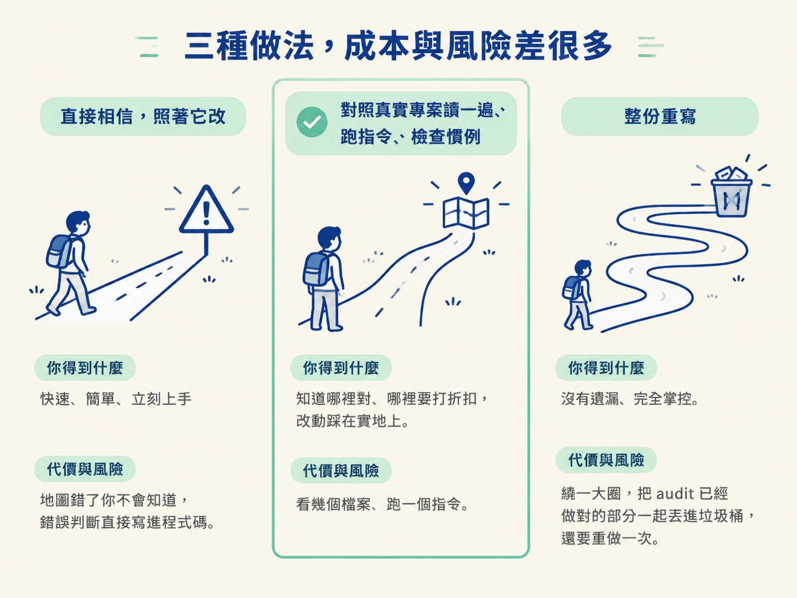
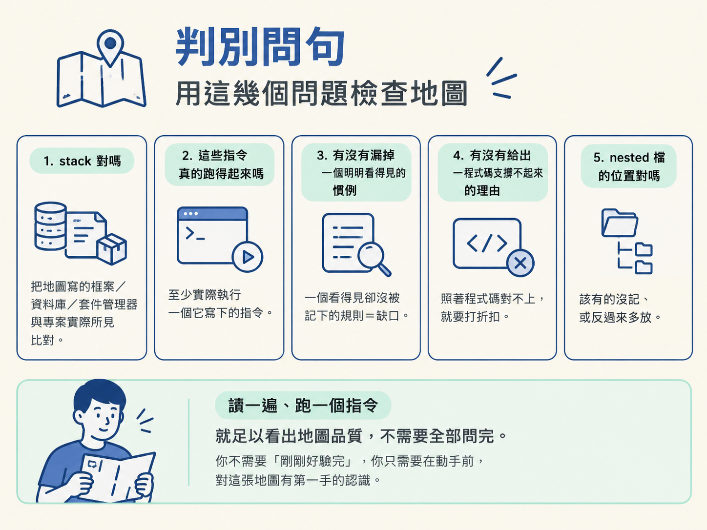

判斷一份 audit 生成的地圖何時可以信、何時要打折扣，並說出「讀它對照實際專案、至少跑一個指令、檢查漏掉的慣例」這套驗證動作與「只補缺的、保護別人已寫的」的克制原則。
上一節走完之後，你手上多了一張由 /audit 產出的地圖：root 的 AGENTS.md、一行 CLAUDE.md 指標，還有 database 與 app 兩份 nested 檔。它讀起來完整、有條理，甚至比你自己翻半天還清楚。也因為它看起來這麼對，最危險的反應就是直接照著它動手。
這一節要處理的決定很單純，卻很關鍵：這張地圖，你願意信到什麼程度？動手改程式碼之前，該先做哪些驗證？ 兩股力量在這裡拉扯。一邊是 audit 確實是從證據裡做出小心選擇的，它讀了程式碼、歷史與既有檔案；另一邊是它從證據裡得到的那些想法，終究還是需要你的判斷。示範者把這句話講得很直白：它挑出來的東西，仍然需要你來確認。
面對一份生成的地圖，你大致有三種做法。把它們並排看，取捨就很清楚：
| 做法 | 你得到什麼 | 代價與風險 |
|---|---|---|
| 直接相信，照著它改 | 最快，省下驗證時間 | 地圖錯了你不會知道，錯的判斷會直接寫進程式碼 |
| 對照真實專案讀一遍、跑指令、檢查慣例 | 知道哪裡對、哪裡要打折扣，改動才踩在實地上 | 要花一段不算長的時間，看幾個檔案、跑一個指令 |
| 整份重寫 | 感覺完全掌握在自己手上 | 把 audit 已經做對的部分也丟掉，而且你得重做一次 |
示範者選的是中間那條。這也是這一節主張的做法：驗證，而不是重做。因為 audit 的價值就在於它已經做了大量閱讀與整理，你要做的是補上它做不到的那塊——人的判斷。

要驗證的東西，其實就是 audit 產出的那幾份檔案。你在專案裡會看到它們落在這些位置：
AGENTS.md root 全域說明（stack、指令、慣例、規則） CLAUDE.md 一行指標，指向 AGENTS.md database/AGENTS.md 資料庫區域的 nested 說明 app/AGENTS.md app 區域的 nested 說明
驗證不需要一套複雜流程，把它想成幾個你可以當場問自己的問題就好：
這幾個問題不需要全部一次問完。實務上，讀一遍、跑一個指令，就足以讓你看見地圖的品質落在哪個水準。你不需要「剛剛好驗完」，你只需要在動手前，對這張地圖有第一手的認識。

上面那套驗證動作有一個前提：你有能力讓指令真的跑起來。示範者在動手前，是先拿到專案所有的 ENV 變數才開始的，這不是隨便一句話——沒有資料庫連線、沒有 API key，很多指令根本跑不動。如果你一時拿不到，最少要把「哪幾條沒驗到」明確標記下來，而不是假裝它們通過了。驗證的空白，本身也是要記錄的資訊。
還有幾種情況，會讓你不能只靠自己看一眼：
反過來說，也有一種情況你不需要過度緊張：地圖不是合約，它允許有小幅不精確。一個描述沒那麼細的區域、一個可以再補強的慣例，都不影響你往下走。你真正要防的，是那些會直接影響你接下來改動的錯誤——錯誤的 stack、跑不動的指令、漏掉的關鍵規則。
把驗證收斂成一份可以放在手邊的檢查表：
而在這份檢查表底下，還有一條比它更長期有效的原則：只補缺少的，保護別人已經寫好的。這條原則在驗證時同樣適用——你不是去把地圖整份重寫，而是補上它漏掉的地方，並保留它已經做對的部分。這份克制，正是讓團隊敢把這張地圖當成共同依據的原因。
audit 生成的地圖是證據，不是真相。它從程式碼、歷史與既有檔案裡做出小心選擇，但那些判斷仍需要你確認。動手前用幾句判別問句檢查：stack 對嗎、指令能跑嗎、有沒有漏掉看得見的慣例、有沒有給出程式碼支撐不起來的理由、nested 檔位置對嗎。至少跑一個指令，拿不到環境就把沒驗到的部分標記下來。你要防的是會影響改動的錯誤，而不是追求地圖的每一行都完美；整份重寫往往只是丟掉 audit 已經做對的事。底層原則和上一節一樣：只補缺的，保護別人已寫的。
地圖驗過了，你才真正站在可以規劃變更的位置上。下一節會用同一套熟悉的 /scope 與 /architect，只是這次它們的行為變了——它們得先讀現況，才能決定變更該落在哪裡。